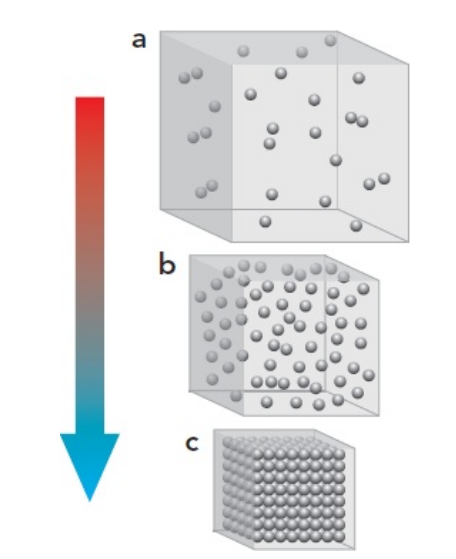
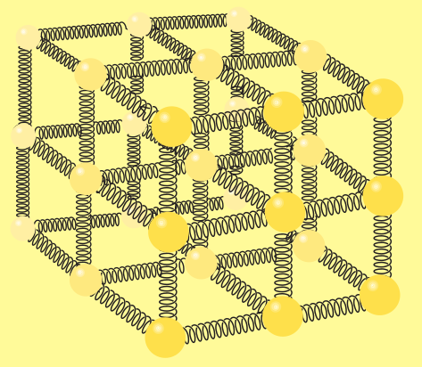
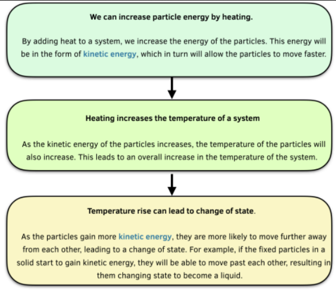
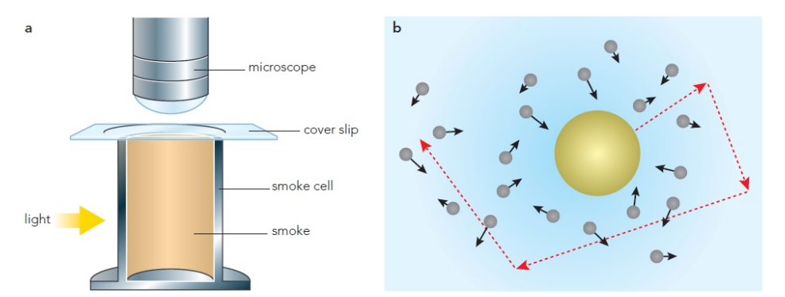
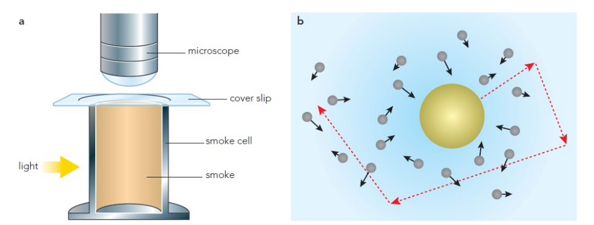
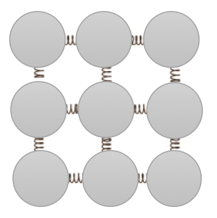
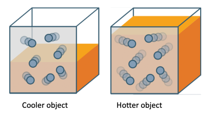
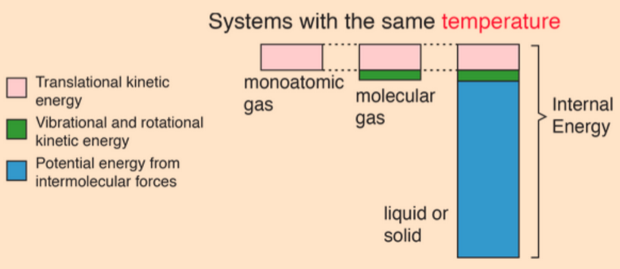

Chapter 5: Thermal Effects
Physics - Year 10

Naypyitaw International Science Academy
5.1: Moving particles
What are the states of matter?

5.1: Moving Particles
 ### 5.1: Moving Particles
* The **Kinetic theory of matter** says that matter is made of tiny particles constantly in motion
* Particles have kinetic energy because they are moving or vibrating
* In solids, particles vibrate about their fixed positions
* In liquids, particles vibrate a little and also move around a little
* In gases, particles move around a lot
### 5.1: Moving Particles
* The **Kinetic theory of matter** says that matter is made of tiny particles constantly in motion
* Particles have kinetic energy because they are moving or vibrating
* In solids, particles vibrate about their fixed positions
* In liquids, particles vibrate a little and also move around a little
* In gases, particles move around a lot
The vibration in particles is because particles have sort of potential energy
This potential energy helps the particles stay together

The electric forces between particles in a solid can be represented by springs.
The kinetic theory of matter was first put forward for gases

In an ideal gas, the molecules only interact with each other in collisions, which are thought to be perfectly elastic
Mikhail Lomonosov
Movement should not be denied based on the fact it is not seen. Who would deny that the leaves of trees move when rustled by a wind, despite it being unobservable from large distances? Just as in this case motion remains hidden due to perspective, it remains hidden in warm bodies due to the extremely small sizes of the moving particles. In both cases, the viewing angle is so small that neither the object nor their movement can be seen.

Pollen grains in water showing Brownian Motion
5.1: Moving Particles

Kinetic theory uses the idea that as particles heat up they gain more kinetic
energy and so move faster. As a substance cools down its particles lose kinetic
energy and slow down. This suggests that there is a theoretical lower limit to
how cold anything can be. If the particles lose all their kinetic energy and stop
moving, it is not possible for the substance to cool any further.
The lowest possible temperature anything can reach is −273 °C. This is also
known as absolute zero.
What are the temperature scales (Celsius, Fahrenheit and Kelvin) based on?
Throughout science, macroscopic observations of how substances behave can usually be explained by a microscopic understanding of what the particles within the substance are doing.
Atoms and molecules are far too small to see, even with a microscope, but
experiments show the effects of moving atoms and molecules. These
experiments do not prove there are moving particles, but they do provide support
for the idea.
In 1827, a scientist called Robert Brown was using a microscope to study pollen
grains when he noticed tiny particles jiggling about. At first he thought that they
might be alive, but when he repeated his experiment with tiny grains of dust
suspended in water, he saw that the dust also moved around. This motion is now
known as Brownian motion, and it happens because the moving particles are
constantly knocked about by the fast-moving particles of the air.
We can do a similar experiment using smoke particles. The oxygen and nitrogen
molecules that make up the air are far too small to see, so we have to look at
something bigger, and look for the effect of the air molecules.
The molecules in air have an average diameter of about 4 × 10−10 metres. This
makes them impossible to see with a laboratory microscope. The smoke particles
consist of many molecules and so are many times larger than the air molecules.
A smoke particle has a diameter of about 1 × 10−7 metres, which is about 250
times the diameter of the air molecules. The air molecules are light but fast
moving and so have enough kinetic energy to cause the smoke particles to
change direction on impact.
We have seen that the kinetic model of matter can explain the differences
between solids, liquids and gases. We can explain some other observations if we
add another scientific idea to the kinetic theory: we need to consider the forces
between the particles that make up matter.
Why do the particles that make up a solid or a liquid stick together? There must
be attractive forces (forces pulling them together) between them. Without
attractive forces to hold together the particles, there would be no solids or
liquids, only gases. No matter how much we cooled matter down, it would
remain as a gas.
Another way to refer to these forces is to say that there are bonds between the
particles. Each particle of a solid is strongly bonded to its neighbours. This is
because the forces between particles are strongest when the particles are close
together. In a liquid, the particles are slightly further apart and so the forces
between them are slightly weaker. In a gas, the particles are far apart, so that the
particles do not attract each other and can move freely about.
The kinetic model can help us understand how gases behave. Thinking about the
particles in a gas helps us answer questions about the gas.
Why does a gas cause pressure on the walls of its container?
The particles of a gas move around inside its
container, bumping into the sides. The gas causes pressure on the walls of the
container because the gas particles are constantly colliding with the walls.
 What happens to a gas when it is heated? Figure 9.13 shows the same gas at a
higher temperature. The higher the temperature of a gas, the faster its particles
are moving. The particles will hit the walls more often and with more force. This
increases the pressure.
Balloon and hot air balloon

An experimental arrangement for observing Brownian motion.
The smoke particles are just large enough to show up under the microscope. The
air molecules that collide with them are much too small to see. b: The invisibly
small air molecules repeatedly hit the smoke particle making it change direction.
The dotted line shows the path of the smoke particle.
Smoke Cell
Explanations involving kinetic model
The kinetic model of matter can be used to explain many observations. Here are
some of them:
•Liquids take up the shape of their container because their particles are free
to move about within the liquid.
•Gases fill their container because their particles can move about with
complete freedom.
•Solids keep their shape because the particles are packed tightly together.
•Gases diffuse (spread out) from place to place, so that, for example, we can
smell perfume across the room. The perfume particles spread about because
they are free to move.
•Dissolved substances diffuse throughout a liquid. Sugar crystals in a drink
dissolve and molecules spread throughout the liquid, carried by the mobile
particles. In a hotter drink, the particles are moving faster and the sugardiffuses more quickly.
•Most solids expand when they melt. The particles are slightly further apart
in a liquid than in a solid.
•Liquids expand a lot when they boil. The particles of a gas are much further
apart than in a liquid. We can think about this the other way round. Gases
contract a lot when they condense. If all of the air in the room you are now
in was cooled enough, it would condense to form a thin layer of liquid, two
or three millimetres deep, on the floor.
The tiny particles that make up matter cannot be seen with the naked eye. Is there evidence to show
that these tiny particles are in continuous random motion?
Robert Brown was a botanist who first observed the continuous, random motion of pollen grains
suspended in water. He did not know why the pollen grains were moving (Figure 8.6). Many years
later, it was found that the random motion of the pollen grains was due to the motion of the water
molecules. This constant random motion of the pollen grains in water was named Brownian motion.
Brownian motion refers to the random movement of microscopic particles in a fluid due to the
collisions by the molecules of the fluid. We can only see microscopic particles under the microscope
as the molecules are too small to be seen. Examples of microscopic particles are pollen grains and
smoke particles.
What happens to a gas when it is heated? Figure 9.13 shows the same gas at a
higher temperature. The higher the temperature of a gas, the faster its particles
are moving. The particles will hit the walls more often and with more force. This
increases the pressure.
Balloon and hot air balloon

An experimental arrangement for observing Brownian motion.
The smoke particles are just large enough to show up under the microscope. The
air molecules that collide with them are much too small to see. b: The invisibly
small air molecules repeatedly hit the smoke particle making it change direction.
The dotted line shows the path of the smoke particle.
Smoke Cell
Explanations involving kinetic model
The kinetic model of matter can be used to explain many observations. Here are
some of them:
•Liquids take up the shape of their container because their particles are free
to move about within the liquid.
•Gases fill their container because their particles can move about with
complete freedom.
•Solids keep their shape because the particles are packed tightly together.
•Gases diffuse (spread out) from place to place, so that, for example, we can
smell perfume across the room. The perfume particles spread about because
they are free to move.
•Dissolved substances diffuse throughout a liquid. Sugar crystals in a drink
dissolve and molecules spread throughout the liquid, carried by the mobile
particles. In a hotter drink, the particles are moving faster and the sugardiffuses more quickly.
•Most solids expand when they melt. The particles are slightly further apart
in a liquid than in a solid.
•Liquids expand a lot when they boil. The particles of a gas are much further
apart than in a liquid. We can think about this the other way round. Gases
contract a lot when they condense. If all of the air in the room you are now
in was cooled enough, it would condense to form a thin layer of liquid, two
or three millimetres deep, on the floor.
The tiny particles that make up matter cannot be seen with the naked eye. Is there evidence to show
that these tiny particles are in continuous random motion?
Robert Brown was a botanist who first observed the continuous, random motion of pollen grains
suspended in water. He did not know why the pollen grains were moving (Figure 8.6). Many years
later, it was found that the random motion of the pollen grains was due to the motion of the water
molecules. This constant random motion of the pollen grains in water was named Brownian motion.
Brownian motion refers to the random movement of microscopic particles in a fluid due to the
collisions by the molecules of the fluid. We can only see microscopic particles under the microscope
as the molecules are too small to be seen. Examples of microscopic particles are pollen grains and
smoke particles.
 The constant collision of air particles on the walls of the container exerts a pressure on the container.
The force from one collision is small but as there are many particles colliding all of the time, the force
exerted is large.
The constant collision of air particles on the walls of the container exerts a pressure on the container.
The force from one collision is small but as there are many particles colliding all of the time, the force
exerted is large.
5.1: Moving Particles
Potential energy in particles can be considered as the energy that keeps the particles in their positions.

5.1: Moving Particles

The more the internal energy, the faster the particles move
5.1: Moving Particles

Internal energy is not synonymous with thermal energy; rather, the thermal energy of a system can be taken as being a part of the internal energy of the system.
The particles dash around at very high speed (about
500 m/s for air molecules at 0°C) in all the space
available.
Brownian motion provides evidence
for the kinetic particle model of matter.
Kinetic model of matter on gas pressure
All the particles in a gas are in rapid random
motion, with a wide range of speeds, and repeatedly
hit and rebound from the surfaces of the container
in huge numbers per second.
This causes a pressure on the surfaces of the
container. When the temperature of the gas rises,
so does the average speed and kinetic energy of
the particles. Collisions with the surfaces of the
container occur more frequently and so the pressure
of the gas increases.
Force and gas pressure
At each collision of a gas particle with a surface
of the container, it undergoes a change of
momentum which produces a force on the surface
(see Topic 1.6). At a constant temperature the
average force and hence the pressure exerted on
the surface is constant, since pressure is force
per unit area. When the temperature rises and the
rate at which collisions with the surfaces of the
container increases, so does the average force and
hence the gas pressure.
 Atmospheric pressure collapses the
evacuated can.
If the average internal energy per molecule in one part of a substance is greater
than another part, then the energy will spread out until it is evenly distributed.
This movement of energy is called thermal energy
In everyday conversation, we use the idea of temperature as a number which
represents how hot (or cold) something is. But that is not precise enough for a
scientific definition.
We know that thermal energy flows from hotter places to colder places, so we
can also say that temperatures determine the direction of net thermal energy
flow.
Since internal energy spreads out from places where it is more concentrated,
we can make a connection between temperature and the concentration of
energy: if the temperature of a substance increases, it is because the average
internal energy of its molecules has increased.
The Celsius temperature scale is an arbitrary scale based (for convenience)
only on the melting and boiling points of pure water. It was decided to call
these 0 °C and 100 °C, with one hundred divisions between them. It is
important to realize that 0 °C is not in any sense a true zero of temperature.
The Kelvin temperature scale was designed to overcome this problem. Its units
are kelvin, K. This scale has a true zero (0 K) as the temperature at which
(almost) all molecular motion has stopped (see later). For this reason the
Kelvin temperature scale is also known as the absolute temperature scale,
and 0 K is called absolute zero. On the Celsius scale absolute zero has the value
of −273 °C (more precisely, −273.15 K).
It was decided that each division on the Kelvin (absolute) scale should be
equal to each division on the Celsius scale. This enables easy conversions
between the two scales: temperature (K) = temperature (°C) + 273 (see
Figure 3.2). The symbol T is used to represent temperature, especially
absolute temperature, but it is also common to use θ for temperatures in
degrees Celsius.
Calculations involving only single temperatures should always use the Kelvin
scale, but calculations involving changes of temperature can use the Kelvin or
the Celsius scale.
Atmospheric pressure collapses the
evacuated can.
If the average internal energy per molecule in one part of a substance is greater
than another part, then the energy will spread out until it is evenly distributed.
This movement of energy is called thermal energy
In everyday conversation, we use the idea of temperature as a number which
represents how hot (or cold) something is. But that is not precise enough for a
scientific definition.
We know that thermal energy flows from hotter places to colder places, so we
can also say that temperatures determine the direction of net thermal energy
flow.
Since internal energy spreads out from places where it is more concentrated,
we can make a connection between temperature and the concentration of
energy: if the temperature of a substance increases, it is because the average
internal energy of its molecules has increased.
The Celsius temperature scale is an arbitrary scale based (for convenience)
only on the melting and boiling points of pure water. It was decided to call
these 0 °C and 100 °C, with one hundred divisions between them. It is
important to realize that 0 °C is not in any sense a true zero of temperature.
The Kelvin temperature scale was designed to overcome this problem. Its units
are kelvin, K. This scale has a true zero (0 K) as the temperature at which
(almost) all molecular motion has stopped (see later). For this reason the
Kelvin temperature scale is also known as the absolute temperature scale,
and 0 K is called absolute zero. On the Celsius scale absolute zero has the value
of −273 °C (more precisely, −273.15 K).
It was decided that each division on the Kelvin (absolute) scale should be
equal to each division on the Celsius scale. This enables easy conversions
between the two scales: temperature (K) = temperature (°C) + 273 (see
Figure 3.2). The symbol T is used to represent temperature, especially
absolute temperature, but it is also common to use θ for temperatures in
degrees Celsius.
Calculations involving only single temperatures should always use the Kelvin
scale, but calculations involving changes of temperature can use the Kelvin or
the Celsius scale.